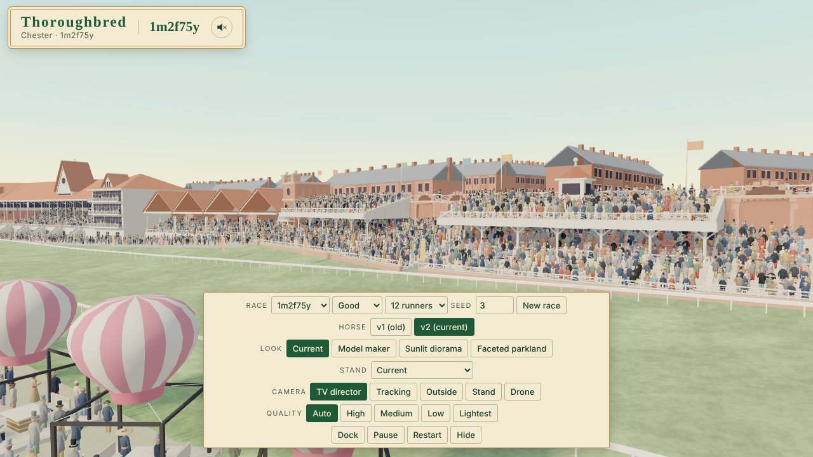

Chester's track in 3D: left-handed, just over a mile round, on its real outline and ground. The stand side modelled from your photos and sheets: the brick block at the bend, the County Stand bending round the kink, Tattersalls' gabled stands, then the city wall with its terraces, covered stands and lantern, packed with people, and the city behind. The infield is one festival. The TV cameras cut as in your Huxley Stakes video. Still to come: the viaduct, the river and the castle corner.

The real track. OpenStreetMap's outline of the turf, the starts where At The Races' diagram puts them, and the ground under every route for the race engine.
The basic rules. Boards 20 m off the track round the outside, a belt of trees from 25 m, thinner trees to 110 m; boards and a looser belt round the infield; the stand side and the run-in's infield kept clear for the stands and the festival.
The cameras. The start camera, the tracking car round the course and along the straight, the stand camera for the last two furlongs, the head-on for straight races, and the replay.
Running slowly? Choose Medium or Low under Quality in the race view's bar. Auto steps down by itself.